A cell must copy all of its DNA exactly once, and then split it into two cells exactly once, in the right order, and only when the body needs more cells. Today: the control system that makes these decisions, and what happens when it breaks.
After this lecture you can:
name the phases of the cell cycle and say what happens in each;
explain how cyclins and CDKs drive the cycle, and how CDKs are switched off (CDK inhibitors, inhibitory phosphates, SCF and APC/C);
explain the G1/S decision: Rb and E2F, positive feedback and the restriction point;
describe the checkpoints, in particular the DNA-damage checkpoint with p53 and p21;
explain how yeast mutants, DNA-content flow cytometry and FUCCI reveal the cycle, and how CDK4/6 inhibitors treat breast cancer.
ELO 7 (cell cycle and division).
The question: how does a cell know where it is in its cycle?
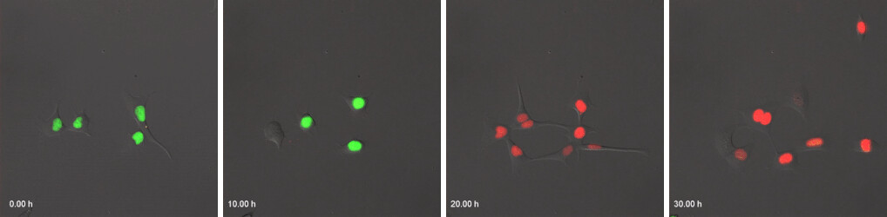
Living cells with FUCCI reporters, time-lapse frames 10 h apart (far-red reporters shown in false colour): green nuclei are in S, G2 or M; after division, the daughters turn red (G1).
A human cell must copy 6 billion base pairs once, never twice, then give one copy to each daughter. Copying twice, or dividing with broken DNA, gives wrong chromosome numbers and mutations.
The colours always change in the same order: green → division → red → (yellow) → green. Most cells in your body are not dividing at all.
What drives the cycle forward, what stops it, and what tells a cell to start?
The four phases of the cell cycle
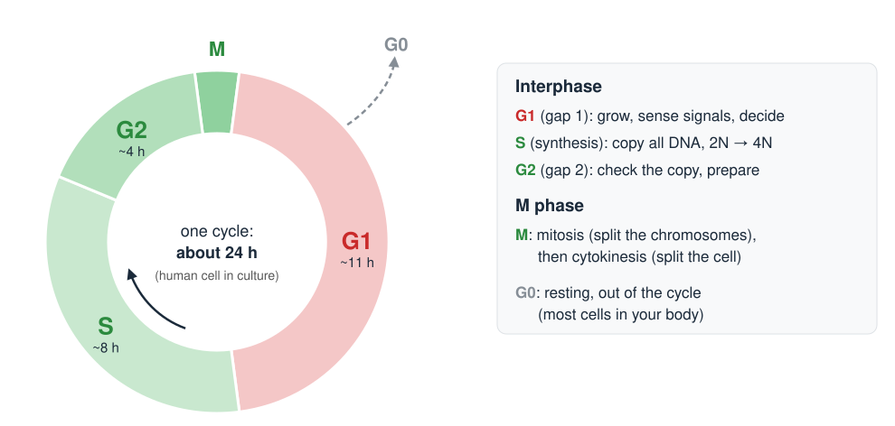
Interphase (G1, S, G2) takes almost all the time; M phase (mitosis and cytokinesis) about an hour.
DNA content per cell: 2N in G1, rising during S, 4N in G2 and M. We will measure this.
G1 is the most variable phase: cells that divide slowly mostly have a long G1, or leave the cycle into G0.
How do we know? Yeast mutants that stop at one point
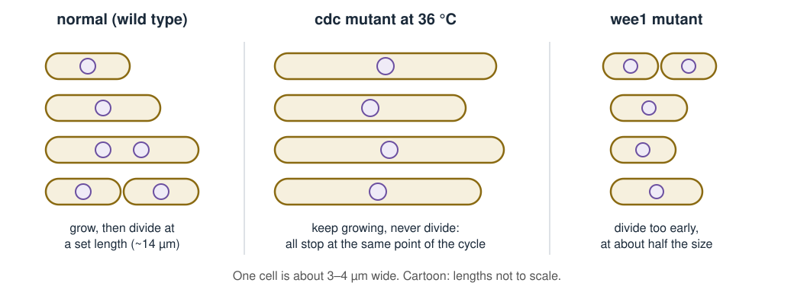
Hartwell (budding yeast, 1970s): temperature-sensitive cdc (cell division cycle) mutants. At the high temperature every cell stops at the same stage: each gene controls one step. He also coined the word checkpoint.
Nurse (fission yeast): cdc2 is the master kinase. Too little activity: long cells that never divide. wee1 mutants divide too early, small. The human gene (CDK1) can replace yeast cdc2: the system is conserved.
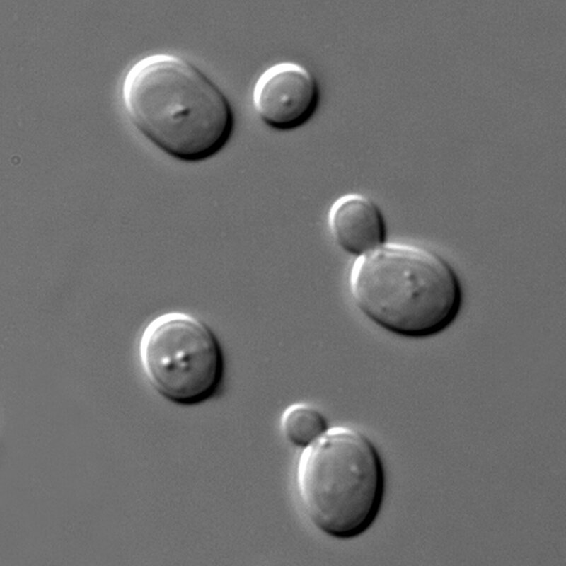
Budding yeast (DIC). Bud size tells the stage: no bud in G1, a small bud in S, a large bud in G2/M.
Cyclins come and go; CDKs stay
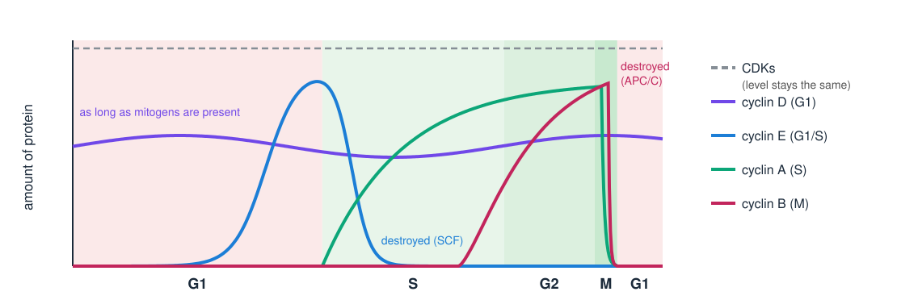
A CDK (cyclin-dependent kinase) is a protein kinase that is inactive alone. It works only when bound to a cyclin. CDK levels stay constant; cyclin levels rise and fall.
Each phase has its own pair: cyclin D–CDK4/6 (G1), cyclin E–CDK2 (G1/S), cyclin A–CDK2 (S), cyclin B–CDK1 (M).
Hunt (1982): in sea urchin eggs, a protein that is made and then destroyed at every division. He named it cyclin.
Switching a CDK on and off
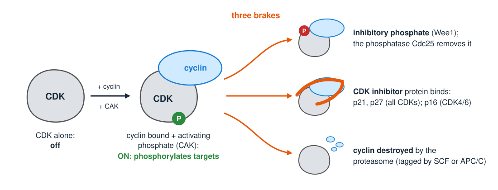
On: cyclin binds, and the kinase CAK adds an activating phosphate.
Off: Wee1 adds an inhibitory phosphate (removed by the phosphatase Cdc25); a CDK inhibitor protein (CKI) binds; or the cyclin is destroyed.
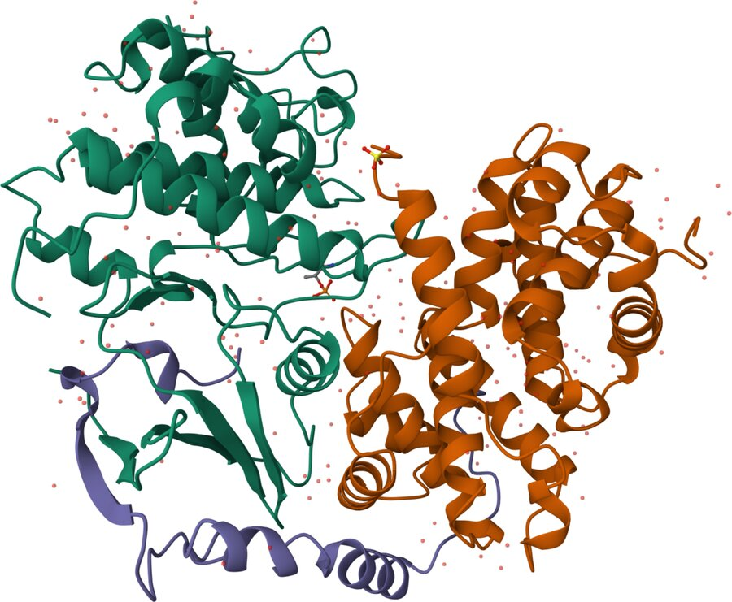
CDK2 (green), cyclin A (brown), p27 (blue); PDB 1JSU.
Destruction moves the cycle forward: SCF and APC/C
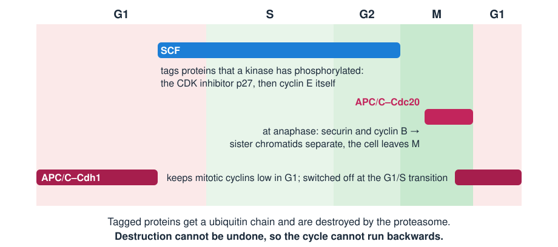
Two E3 ubiquitin ligases (the protein-lifecycle lecture) tag cell-cycle proteins for the proteasome.
SCF acts on proteins that a kinase has phosphorylated: the CKI p27 (so S phase can start), then cyclin E.
APC/C: with Cdc20 it triggers anaphase (securin, cyclin B); with Cdh1 it keeps cyclins low through G1.
All or none, and only once
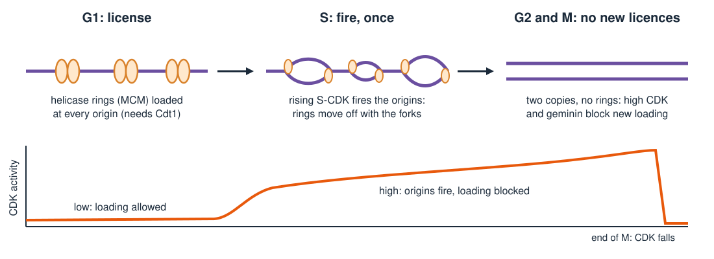
Licensing: in G1 (CDK low), helicase rings are loaded on every replication origin. In S, rising CDK activity fires them and blocks reloading until the end of M. So each origin fires once per cycle.
Switches: CDK1 activates its own activator (Cdc25) and inhibits its inhibitor (Wee1): positive feedback makes entry into M fast and all-or-none.
Cell fusion (1970): fuse an S-phase cell with a G1 cell → the G1 nucleus starts copying. Fuse with a G2 cell → the G2 nucleus does not copy again.
The decision to divide: Rb and E2F
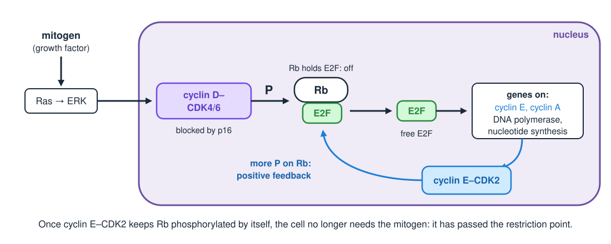
Mitogens (growth factors) → Ras–ERK (the kinase-cascade lecture) → cyclin D is made.
Unphosphorylated Rb holds the transcription factor E2F. CDK4/6 phosphorylates Rb → E2F is released → genes for cyclin E and DNA replication turn on.
Cyclin E–CDK2 phosphorylates more Rb: positive feedback. The switch flips to ON and stays there.
The restriction point: commitment
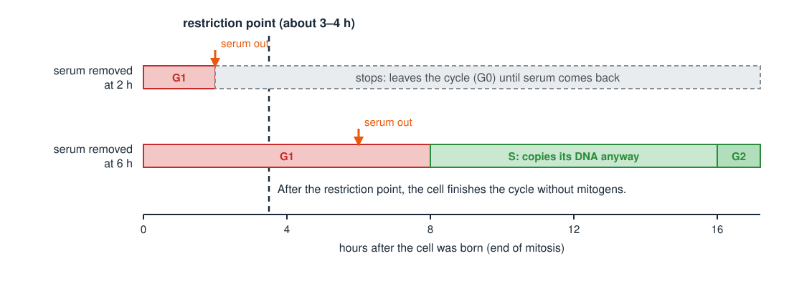
Before the restriction point, a cell needs mitogens all the time; without them it returns to G0.
After it, the Rb–E2F loop runs by itself: the cell completes the cycle even if mitogens disappear.
Found by removing serum at different times (Pardee, 1974); time-lapse of single cells (Zetterberg and Larsson, Karolinska Institute, 1985).
Checkpoints: brakes at three transitions
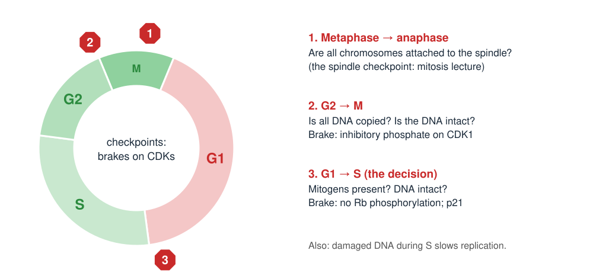
A checkpoint stops the cycle until a condition is met, by blocking CDK activity or the APC/C.
Checkpoints are not needed to run the cycle; they are needed to run it safely. Yeast without them divide normally, until something goes wrong.
DNA damage: p53 and p21 stop the cycle
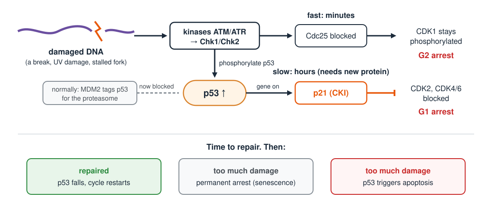
Damaged DNA activates the kinases ATM/ATR and Chk1/Chk2.
Fast: Cdc25 is blocked, CDK1 keeps its inhibitory phosphate → G2 arrest (works without p53).
Slow: p53 escapes its E3 ligase MDM2, accumulates and switches on p21, a CKI → G1 arrest. Too much damage: senescence or apoptosis.
How do we know? DNA content by flow cytometry
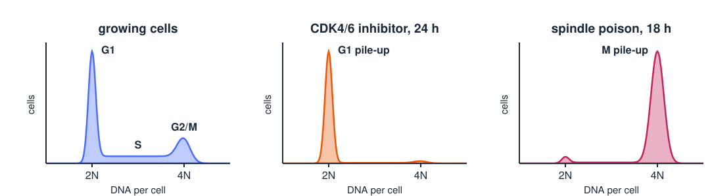
Stain fixed cells with a DNA dye (propidium iodide, DAPI) and measure thousands of cells in a flow cytometer (the cell-methods lecture). Fluorescence ∝ DNA content.
Peaks at 2N (G1) and 4N (G2/M), with S-phase cells in between. A drug that stops cells piles them up at one place: this is how arrest points are mapped.
To tell G2 from M, or to mark S precisely, add a second stain (e.g. a mitosis marker, or EdU taken up during S).
How do we know? FUCCI shows the cycle in living cells
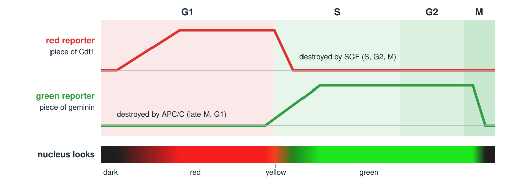
Two fluorescent proteins fused to degradation signals from cell-cycle proteins: a piece of Cdt1 (red; destroyed by SCF in S, G2, M) and a piece of geminin (green; destroyed by APC/C in late M and G1).
The control system reads itself out: no fixing, the same cell followed for days. Developed by Miyawaki’s lab (2008). Try it:the cell-cycle clock.
Why it matters: CDK4/6 inhibitors in breast cancer
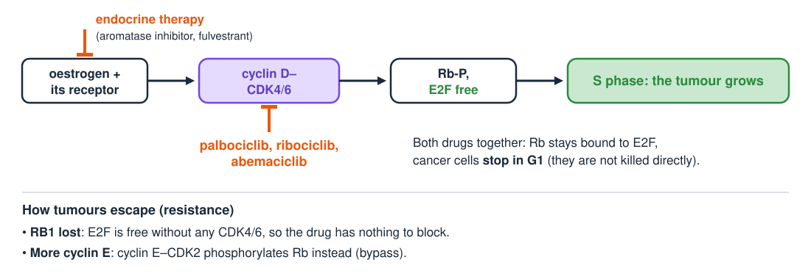
About 70 % of breast cancers are oestrogen-receptor positive and depend on cyclin D1–CDK4/6 (tamoxifen and the oestrogen receptor: the fate-signalling lecture).
Palbociclib (approved 2015), ribociclib, abemaciclib + endocrine therapy: in advanced disease, time until the cancer grows again went from about 15 to about 25 months. Main side effect: fewer neutrophils (their precursors also need CDK4/6), reversible.
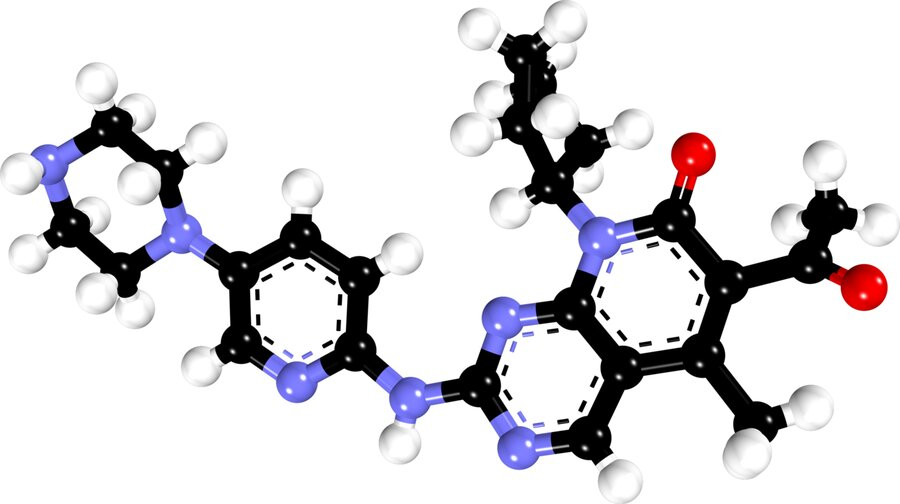
Palbociclib (C black, N blue, O red, H white); it fills the ATP pocket of CDK4/6.
TP53 mutated in about half of all cancers; MDM2 amplified; HPV protein E6 destroys p53
Almost every cancer has a defect in both pathways: the restriction point is ignored, and damaged DNA is copied and divided.
This decides which drugs work: a tumour without Rb does not respond to a CDK4/6 inhibitor. More in the cancer lecture and in Sjukdomslära.
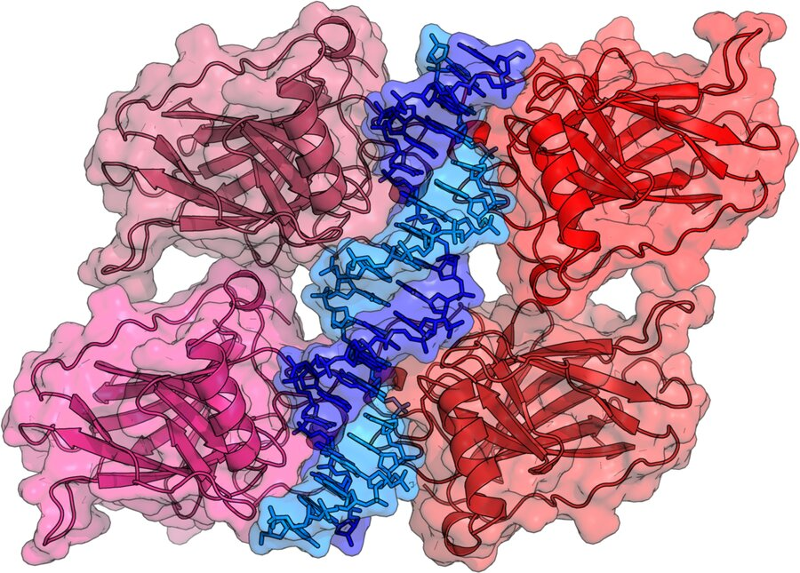
Four p53 DNA-binding domains (red, pink) on their DNA site (blue) (PDB 3KMD). Most cancer mutations hit this domain.
Summary
The cycle has four phases: G1 (decide), S (copy DNA, 2N → 4N), G2 (check), M (divide); non-dividing cells rest in G0.
CDKs are active only with a cyclin; cyclins rise and fall in each cycle. CDKs are switched off by inhibitory phosphates (Wee1/Cdc25), CDK inhibitors (p21, p27, p16) and cyclin destruction by SCF and APC/C, which makes the cycle one-way.
Licensing lets each origin fire once per cycle; positive feedback makes transitions all-or-none.
Mitogens → cyclin D–CDK4/6 → Rb phosphorylated → E2F free → cyclin E: past the restriction point the cell is committed. Checkpoints stop the cycle; after DNA damage, p53 induces p21.
Yeast cdc mutants, DNA-content flow cytometry and FUCCI reveal the cycle; CDK4/6 inhibitors (palbociclib) stop ER-positive breast cancer cells in G1, and cancers often break the Rb and p53 brakes.
Read more (optional): Alberts et al., Molecular Biology of the Cell, 7th ed., ch. 17.